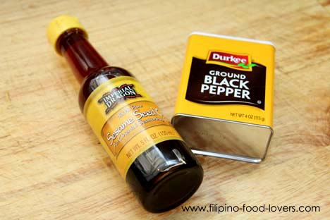

Sopas
Sopas is delicious and it’s fairly easy to make.
A few parts of chicken, some hotdogs, and macaroni can put a smile on the faces of most Filipino children or adults.
Sopas can be found not only in the kitchen in most homes during afternoons, but it is also very popular in side walk cafeterias known as Turo-turo restaurants in the Philippines.
Sopas is often served in mid-afternoon as a snack to tie people over before hitting the big supper in the early evening.
Sopas is good on a hot summer day, even better on a rainy day back home, or quite a treat on cold winter days here in America.
Thinking back to old memories, this particular dish reminds me of my high school life in the Philippines.
We all know how small our allowances were back in high school and one of the few things that my allowance could afford was this soup during lunch time.
It is cheap and quite satisfying.
Anyway, let’s get down to business and start cooking.
Ingredients:
- 1 Boneless chicken breast
- 2 Cups macaroni shells (elbow is fine if you prefer)
- 12 Cups chicken stock
- 1 Cube chicken bouillon
- 1½ Cups milk
- ¼ Cup shredded carrots
- 1 Cup shredded cabbage
- 2 Hotdogs cut into matchsticks pieces
- 4 Garlic cloves
- ½ Tsp. Ground black pepper
- 2 Tbs. Patis (fish sauce)
- 7 Cups water
- 3 Cans chicken stock (6 cups)
Start by boiling the chicken breast with 7 cups of chicken stock.
Have six (three cans) more cups ready for the rest of the ingredients.
Cooking Process:
- Brown garlic with 4 tbs. of cooking oil, then add onions, and let it cook until softened.
- After the onions are ready, add your shredded chicken breast, and season it lightly with salt and pepper.
- Let the chicken breast cook for about 2 minutes, add the hotdogs, and allow it to cook for two minutes also.
- After the hotdogs are ready go ahead and season it with 2 tbs. patis (fish sauce).
- At this time you may go ahead and add the 12 cups chicken stock.
- Bring the stock to a boil and let it simmer for two minutes, then add the 2 cups of macaroni shells.
- At this point, it is very important that you stir it constantly to avoid the macaroni from sticking to each other.
- Time it from this point. See the cooking instructions of your macaroni for how long you should cook it. Normally, it should take anywhere from 7-9 minutes.
- The idea is that you want to get all your ingredients in and cooking at least two minutes under the time that is required to cook your macaroni.
- Do not, I repeat, do not cook it the full 7 or 9 minutes before removing it from the heat. If you do, you will over cook your macaroni every time.
- Your macaroni will continue to cook after you turn the heat off, therefore you have to give it time for that.
Okay let’s get back to cooking:
After three minutes, add the milk and let it cook for 2 minutes.
Then add your carrots and let it cook for another minute.
Adjust the taste by adding more salt, ground pepper, or patis if needed and add your final ingredient, which is the cabbage.
Stir it good, put the cover back on, and remove it from the heat.
Let it stand for five minutes before serving.

Top Chicken Sopas with Sesame oil and ground black pepper!